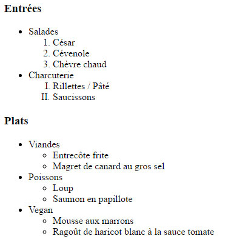
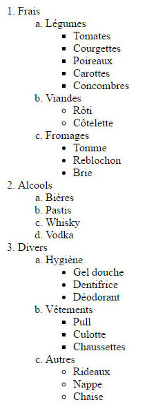

Les Listes à puces - Mise en pratique HTML
Suite au cours sur les listes à puces HTML, nous allons mettre en pratique les différentes balises HTML et leurs attributs correspondant à cette structure.
Vous allez trouver ci-dessous différentes images représentant des structures de listes HTML que vous devez reproduire.
Exercice 1 - Carte de restaurant

Entrées
- Salades
- César
- Cévenole
- Chèvre chaud
- Charcuterie
Plats
- Viandes
- Entrecôte frite
- Magret de canard au gros sel
- Poissons
- Vegan
- Mousse aux marrons
- Ragoût de haricot blanc à la sauce tomate
Exercice 2 - Liste de courses

- Frais
- Légumes
- Tomates
- Courgettes
- Poireaux
- Carottes
- Concombres
- Viandes
- Fromages
- Alcools
- Bières
- Pastis
- Whisky
- Vodka
- Divers
- Hygiène
- Gel douche
- Dentifrice
- Déodorant
- Vêtements
- Autres